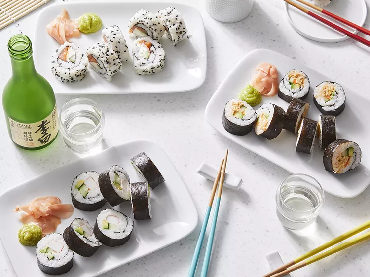

Homemade Sushi Rolls

Description
This recipe will teach you how to make some popular sushi rolls like California
rolls, Philadelphia rolls, or spicy tuna rolls at home.
Ingredients
- 1 ⅓ cups sushi rice
- 1 (4 inch) piece dashi kombu (dried kelp)
- 3 cups water
- 2 tablespoons rice wine
- 2 tablespoons sugar
- ¾ teaspoon salt
- 4 nori seaweed sheets
- desired fillings (see bottom of recipe)
Steps
- Put rice into a large deep bowl. Fill with cold water and rub rice together with
hands until water turns milky white. Drain cloudy water, being careful not to
pour out rice. Repeat three or four times until you can see rice through 3
inches of water; drain once more.
-
Transfer rice to a saucepan; add kombu and 3 cups water. Let stand 30 minutes.
Cover; bring to a boil over high heat. Reduce heat to low; simmer 10 minutes.
Remove from heat and let stand, covered, 5 minutes.
- Meanwhile, stir together rice vinegar, sugar, and salt in a small bowl until dissolved.
- Remove and discard kombu; stir in vinegar mixture until no lumps remain. Spread rice
mixture onto a rimmed 9x13 baking sheet. [Spreading helps cool rice and prevents it
from continuing to cook.] Let cool to room temperature.
- Lay one sheet of nori on a sushi mat lined with plastic wrap; spread 1 cup of rice over
nori with damp fingers, leaving a 1-inch border along one edge. Arrange desired
fillings (see below) crosswise just off center of rice. Carefully lift filled edge of
nori and roll over filling toward unfilled edge, tucking as you roll. Brush unfilled
edge of nori with water; press to seal. Cut each roll into 8 pieces. Repeat with
remaining nori, rice, and fillings. To make ahead, chill, covered, up to 4 hours.
Philadelphia Roll
Trim and quarter half a cucumber. Thinly slice each quarter lengthwise to make 8
spears. Cut 4 oz. cream cheese into 4 sticks. After spreading rice on nori (do not
leave a border), sprinkle each roll with 1 tsp. each white sesame seeds and black
sesame seeds. Carefully flip over. Arrange 2 oz. cold smoked salmon, the cucumber,
and cream cheese sticks in a line across the sheet about one-third from the top. Roll
and cut as directed. Makes 4 rolls.
California Roll
Trim and quarter half a cucumber. Thinly slice each quarter lengthwise to make 8
spears. Slice 1 avocado into 8 slices. Trim 31/2 oz. imitation crab (surimi) into 4
sticks. Evenly arrange cucumber, avocado, and crab in a line on rice about
one-third of the way from tops of rice. Layer each roll with 2 cucumber spears and
2 slices avocado. Roll and cut as directed. Makes 4 rolls.
Spicy Tuna Roll
Trim and quarter half a cucumber. Thinly slice each quarter lengthwise to make 8
spears. Slice 1 avocado into 8 slices. Very thinly slice 1 small carrot lengthwise to
get 1/2 cup matchsticks. Stir together 1 (5-oz.) can solid white tuna in water,
drained; 1 Tbsp. mayonnaise; 1 tsp. wasabi paste; and 1/2 tsp. chile-garlic paste in
a small bowl. Evenly arrange carrot, cucumber, and avocado in a line on rice across
the sheet about one-third from the top. Spread a line of tuna alongside vegetables.
Roll and cut as directed. Makes 4 rolls.